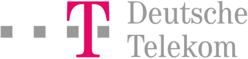
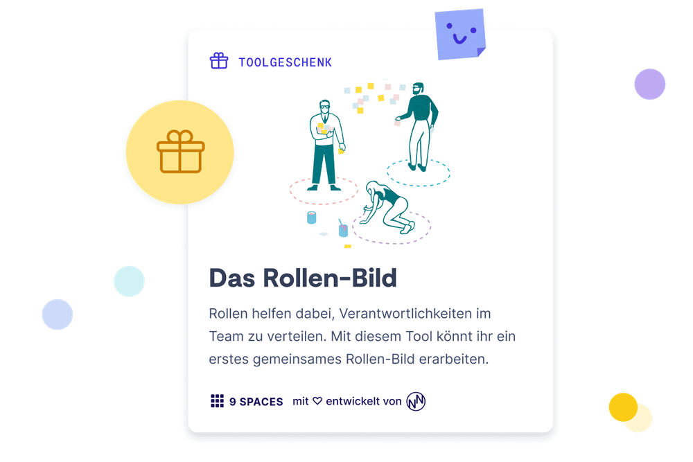
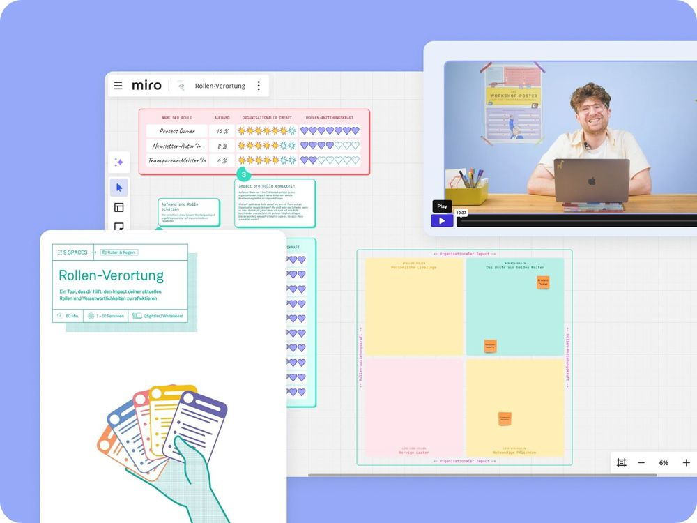
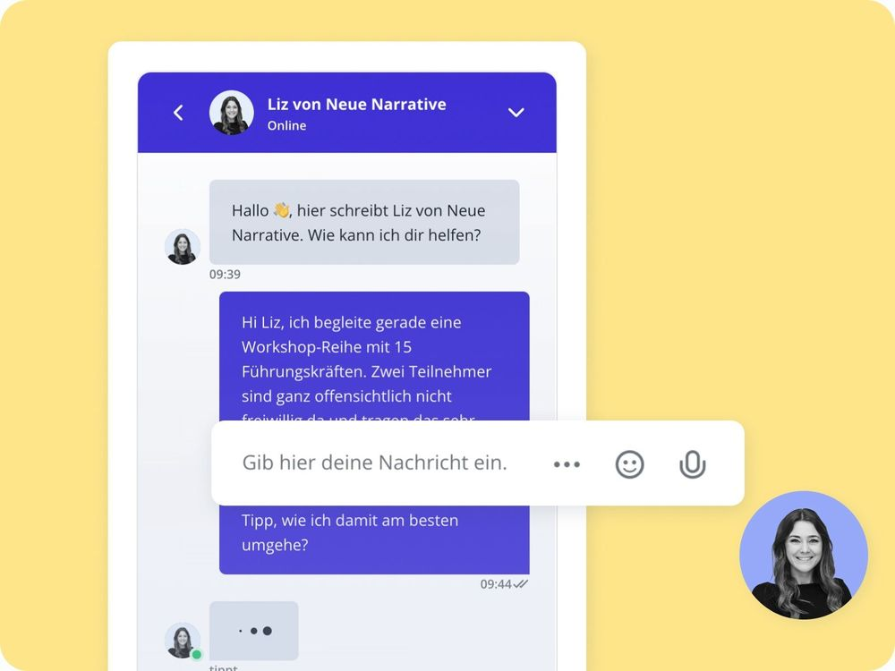

Solo
1 Zugang
299€
pro Jahr
zzgl. MwSt
Jährliche Abrechnung, jederzeit kündbar
9 Spaces ist dein Begleiter durch einen wilden Führungsalltag. Bei uns findest du Workshop-Formate und Übungen, die dir dabei helfen, dich und dein Team ständig weiterzuentwickeln.

Diese Seite richtet sich an Entscheider*innen, die ihre Leadership-Kompetenzen stärken und mit ihrem Team wirklich etwas bewegen wollen.


Wie schön, dass du hier bist. Hol dir jetzt dein exklusives Geschenk und bring mit dem Tool „Rollen-Bild“ mehr Klarheit in die Zuständigkeiten im Team.
Führung ist keine Zauberei. Führung ist ein Skill, den man lernen kann. Auf 9 Spaces findest du pragmatische Handouts, Templates und Leitfäden, die dich fit für den Alltag als Führungskraft machen. Baue deine eigene Führungs-Bibliothek auf.

Viele Führungskräfte bekommen in ihren Organisationen wenig fachliche Unterstützung. In unserem Business-Plan hast du Zugriff auf einen Livechat mit erfahrenen Beratern. Wir lösen jedes Organisationsproblem mit dir.


Leadership ist der Teil von Führung, der eine große Vision aufzeigt, sie in Ziele und Strategien übersetzt und alle motivational mitreißt. Heute heißt das auch, immer wieder ein neues oder angepasstes Bild zu entwerfen und im ständigen Austausch mit der Innen- und Außenwelt des Unternehmens zu sein.

Hiermit meinen wir den Bereich des Führens, der die Ausrichtung in gute Prozesse und Abläufe übersetzt. In diesem Führungsanteil fragst du dich jeden Tag, was zu tun ist, wo es Optimierungen braucht und welche Fallstricke antizipiert werden sollten.

Damit ist der Teil von Führung angesprochen, der sich darum kümmert, dass alle Mitarbeitenden sich persönlich und fachlich weiterentwickeln, stetig lernen und ihr volles Potenzial entfalten.
Aufgeteilt in drei Module unterstützen sie dich dabei, als Leader zu wachsen, Teams zu stärken und eine inspirierende Arbeitskultur zu schaffen.
Den KI-Facilitator gibt’s exklusiv im Business- und Enterprise-Plan.

zzgl. MwSt
Jährliche Abrechnung, jederzeit kündbar
Zugang für mehrere Mitarbeitende in einem maßgeschneiderten Plan

Lass uns darüber austauschen, wie dein Team oder deine Organisation das volle Potenzial von 9 Spaces ausschöpfen kann. Mit echten Beispielen aus anderen Organisationen.